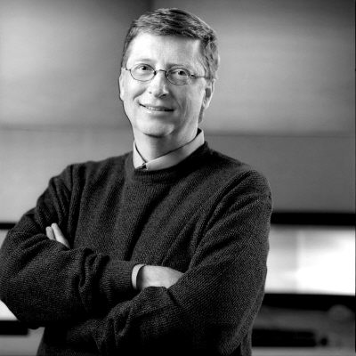

比尔•拉福是美国当代的著名企业家。
比尔从商的志向来自他的父亲，他的父亲在商界滚打多年却始终没有取得什么骄人的成绩。受父亲影响，比尔从小就立志要做一位成功的商人，更何况他的父亲也认为他做事机敏果断，敢于创新，非常具有商业天赋，所以一直鼓励比尔去读经济或者商贸类大学。
让父亲没有想到的是，比尔在高中毕业后，却来到麻省理工学院学习工科中最基础最普通的机械制造专业。比尔的父亲生气地指责比尔说：“你一定是忘记了自己的理想，要知道，你并不是要做一位出色的工人，而是做一位成功的商人，你为什么不读商业贸易，反而要来学机械制造呢？你这不是拉近理想，分明是把理想推得更远了！”
比尔不赞同父亲的观点，他觉得适当把理想推远一点是正确的，因为工业商品在商贸中占了绝对的大多数，如果不具备工科知识，就不能了解产品的性能、生产制造等各方面的情况，将来很难保证能在经商中占到优势，更何况工科学习不仅是增强工业技能，还能帮助一个人建立严谨求实的思维能力，培养一种脚踏实地的工作态度，这些素质都是经商所不能缺少的。 听了比尔的解释，他的父亲终于明白了比尔的想法，比尔也得以留在麻省理工学院继续读书，四年的大学，比尔没有拘泥于本专业，他同时还学习了许多化工、建筑、电子等方面的基本知识，毕业后，立志从商的比尔并没有立刻带着这些知识投身商海，而是考入了芝加哥大学继续攻读经济学的硕士学位，这期间，比尔掌握了大量的经济学基本知识，掌握到了决定商业活动正确性的众多因素。
取得学位后，按理说比尔应该可以向理想进发了，可是他不仅没有立刻下海经商，反而还进一步把理想推远了：他又花了三年时间进入别的私人学校学习法律知识，之后又进入了一所法学院旁听法律课程，同时他还学习了一些微观经济活动的专业经济学以及企业管理知识！完成这一切之后，比尔又考进了政府部门工作，直到这时，他的父亲终于忍不住了，他指责比尔已经彻底忘记了自己的理想，他提醒比尔说他应该努力让自己成为一名成功的商人，而不是去从事政治。
比尔有自己的想法，因为经商必须要具备很强的交往能力，要想在商业上获得成功，必须要深知处世规则，善于人际交往，然而这种能力是在任何学校都学不到的，只有在实践中才能磨炼出来，而磨炼这种能力的最佳去处就是政府部门。比尔在政府部门一干就是5年，他也在工作中培养起了深思稳重、沉着冷静的个性。
5年的政府工作结束后，比尔开始慢慢向商业靠近，他应聘到一家公司去熟练商情与商务技巧，因为表现突出，两年后，公司打算出高薪让他担任副总经理，但比尔却辞职了，他意识到自己是时候正式向自己的理想迈开脚步了，随后，他开办了自己的拉福商贸公司，这时，比尔已经是一位35岁的中年人。
因为比尔的准备工作实在充分，在接下来的商务操作中，他几乎能考虑到每个细节，能应对一个合格的商人应该能应对的一切，并且能够嗅到各种商机，避免各种法律纠纷，他之前所学的每一点知识和所做的每一步准备，都在他之后的商业活动中发挥出了不可忽略的作用，生意进展异常顺利。
也正因如此，在此后短短的25年时间里，比尔的公司从最初20万美元的资产发展成了现在200亿美元，比尔本人也成为美国商业圈的一个神话人物。
对于比尔的成功，2011年诺贝尔经济学奖得主托马斯•萨金特就曾在一本书中这样评论：“急于求成在很多时候往往是欲速则不达，而适当推远理想反而是一种备战人生的最佳方式，比尔所拥有和依赖的，就是这种独特的智慧！”